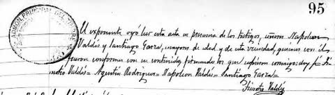

Casa García de León × Carrillo · Saltillo
Lic. Antonio García Carrillo

Abogado, periodista y gobernador de Coahuila (1874–1879) · 1842 – 1891
Abogado saltillense, discípulo de Sebastián Lerdo de Tejada, impulsor de la ratificación de la independencia de Coahuila respecto de Nuevo León (1868), cofundador del Ateneo Fuente y gobernador del estado. El Teatro García Carrillo de Saltillo honra su nombre.
Antonio García Carrillo nació en Saltillo el 17 de febrero de 1842, hijo del comerciante y agricultor Antonio García de León y de doña Fernanda Carrillo, en una familia de siete hijos. Murió en su ciudad natal en 1891.
Vida
Con apenas quince años acompañó a su hermano mayor Dionisio a un mitin en la Alameda de Saltillo contra la anexión de Coahuila a Nuevo León decretada por Santiago Vidaurri; su padre los envió por seguridad a San Luis Potosí. Tras pasar por Zacatecas llegó a la Ciudad de México en enero de 1861 e ingresó al Colegio de San Ildefonso bajo la tutoría de Sebastián Lerdo de Tejada. Presentó su examen profesional el 6 de marzo de 1866 y, no conforme con un título firmado bajo el Imperio, viajó a Chihuahua para recibir uno firmado por el presidente Benito Juárez.
Obra y cargos
- 1867 · Ministro fiscal del Tribunal Superior de Justicia, secretario de Gobierno, cofundador del Ateneo Fuente y corredactor de sus estatutos y planes de estudio.
- 1868 · Como diputado al Congreso de la Unión impulsó la ratificación del decreto juarista que separó a Coahuila de Nuevo León.
- 1867 · Redactor en jefe del Periódico Oficial durante el sitio de Querétaro.
- 1873 · Autor de la Ley Electoral del Estado; promotor del Casino de la Unión, hoy Casino de Saltillo.
- 1874 · Gobernador interino constitucional; trasladó la sede del gobierno al edificio frente a la Plaza de la Independencia.
- 1875–1879 · Gobernador constitucional electo; en 1875 decretó la erección de la Villa de Jiménez.
- Después · Senador y miembro de la comisión para el establecimiento de vías férreas en Coahuila.

Legado
La historiografía coahuilense lo recuerda como artífice jurídico de la soberanía del estado. Su nombre perdura en el Teatro García Carrillo del centro de Saltillo, descrito en su inauguración como homenaje a «un distinguido abogado, sabio y probo gobernador, además de literato y buen ciudadano». Fue padre de José García Rodríguez, después director del Ateneo Fuente.
Nota editorial: esta ficha sustituye al borrador «Antonio García Garrido», nombre que no aparece documentado en el archivo. Algunas fuentes dan el 14 de febrero de 1842 como fecha de nacimiento. El retrato que encabeza esta ficha procede de la obra de Martha Durón Jiménez, Orígenes de una fundación… José García Rodríguez 1530–1992, p. 31. Se agrupa en la familia García Garza por su apellido García; su filiación directa con Lorenzo García y Juana de la Garza está en investigación.
Fuentes
- Martha Durón Jiménez, «Orígenes de una fundación… José García Rodríguez 1530–1992», p. 31 (retrato)
- Jaime García Narro, «El Lic. Antonio García Carrillo y la Independencia de México», Colegio Coahuilense de Investigaciones Históricas, Revista núm. 116
- Lucas Martínez, «El Plan de Tuxtepec» (Colegio Coahuilense de Investigaciones Históricas)
- Zócalo — Algo que no sabías del Teatro García Carrillo
- Conoce Saltillo — Teatro Antonio García Carrillo
- Vanguardia — El hombre que dejó su vida en el Ateneo Fuente de Saltillo
Ficha de enlaces del archivo
Gobernador constitucional de Coahuila del 15 de diciembre de 1875 al 15 de diciembre de 1879. Hijo de Antonio García de León y Fernanda Carrillo. Tío de Dionisio García Fuentes.
A los quince años acompañó a Dionisio a un mitin en la Alameda de Saltillo contra la anexión vidaurriana de Coahuila a Nuevo León. El padre los envió a San Luis Potosí. Antonio pasó a Zacatecas, tendió mostrador con un primo y luego estudió leyes. El 6 de marzo de 1866 presentó examen profesional en el Colegio de San Ildefonso. Lo aprobaron por unanimidad.
Diputado federal. Impulsó que el Congreso elevara a precepto constitucional el decreto de Juárez que separaba a Coahuila de Nuevo León (Diario Oficial, 20 de noviembre de 1868). Cofundador y director del Ateneo Fuente. Secretario de Gobierno. En 1872 Lerdo de Tejada lo nombró a la Comisión Pesquisidora. En 1880 presidió el Casino de la Unión y fundó el Colegio de Abogados de Coahuila.
Casó con Aurelia Rodríguez Ramos. Hijo sobreviviente: José García Rodríguez, segundo albacea del testamento de José Antonio Narro Rodríguez.
De Joseph García y Francisca Ramos. Línea de los García del Huachichil.
Esta biografía también está publicada, con sus fuentes, en genealogiasefardi.site. Información avalada por Sefarad MX y genealogiasefardi.site.